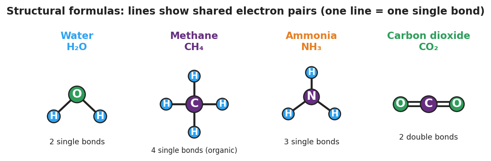
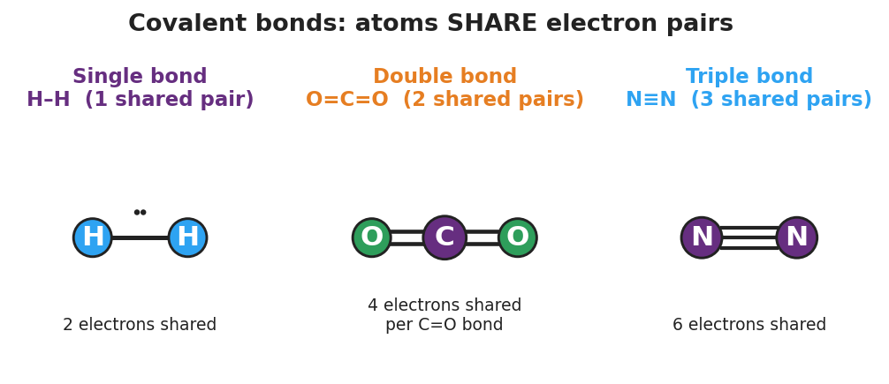

01 Phenomenon
Water does three strange things. Overfill a glass and the surface bulges above the rim without spilling — held up by an invisible “skin.” Lay a steel paperclip flat on that skin and it floats, even though steel is about 8 times denser than water. Drop an ice cube into a glass of water and it floats — almost nothing else floats in its own liquid. And water stays liquid all the way up to 100 °C, while methane (CH₄), a molecule of similar size, is a gas by −162 °C. All three behaviors trace back to one thing: how the atoms inside a water molecule are bonded together.
02 Driving question
Why does water have such unusual properties — surface tension, floating ice, and a high boiling point?
03 Notice & wonder
| I notice… | I wonder… |
|---|---|
Turn & Talk #1: Water (H₂O) and methane (CH₄) are both small molecules made of a few nonmetal atoms. Yet water stays liquid until 100 °C and methane is a gas by −162 °C. In one sentence: what might be different about how the atoms are connected inside these two molecules?
04 Initial model
In the ionic-bonding lesson, a metal atom gave its electrons away to a nonmetal. But water is made of two nonmetals (H and O) — neither one wants to give electrons away.
Draw your best guess: how could two nonmetal atoms that both want electrons end up connected? Sketch how you think the hydrogen and oxygen atoms in a water molecule are joined.
(sketch here)
One sentence — what is your guess for how the atoms hold together if neither one gives electrons away?
05 Investigate
Part 1 — Build the molecules (model kits)
Build each molecule with your kit. Count the sticks (bonds) between each pair of atoms. A stick = a connection between two atoms.

| Molecule | Central atom | Sticks (bonds) to EACH outer atom | Total bonds on central atom |
|---|---|---|---|
| H₂O | |||
| CH₄ | |||
| NH₃ | |||
| CO₂ |
Which molecule needed more than one stick between two atoms? _______________
How many sticks did carbon dioxide need between the carbon and each oxygen? _______________
Count the total bonds on the carbon atom in CH₄ and in CO₂. Are they the same number? _______________
Part 2 — Build an organic molecule (carbon chain)
Carbon is special: it makes four bonds and it can bond to itself. Connect two carbon atoms with one stick, then fill every empty hole with a hydrogen.
How many hydrogen atoms did you need to fill all the empty holes? _______________
What is the formula of the molecule you just built (count C’s and H’s)? _______________
This is your first organic molecule. In one sentence, what makes carbon able to form chains?
Part 3 — Counting shared pairs
Your teacher will project figures/covalent_bond_orders.png. Use it to fill in the table. One stick (one line) = one shared pair of electrons = 2 electrons.

| Bond type | Lines drawn | Pairs shared | Electrons shared |
|---|---|---|---|
| Single (H–H) | |||
| Double (C=O) | |||
| Triple (N≡N) |
06 Make it make sense
For each molecule below, count the bonds and draw the structural formula. Use one line for each single bond and two lines for each double bond. These are the molecules you built in the Investigation — confirm your work here.
Water (H₂O) — oxygen in the center, one bond to each hydrogen.
- Number of bonds total: _______________
- Draw the structural formula (remember: water is bent, not straight):
(draw here)
Methane (CH₄) — carbon in the center, one bond to each hydrogen.
- Number of bonds on carbon: _______________
- Draw the structural formula:
(draw here)
Carbon dioxide (CO₂) — carbon in the center, a double bond to each oxygen.
- How many shared pairs between carbon and EACH oxygen? _______________
- Draw the structural formula (use double lines):
(draw here)
07 Key vocabulary
- covalent bond
- a chemical bond formed when two nonmetal atoms share one or more pairs of electrons; the shared pair belongs to both atoms and holds them together in a molecule (contrast with the ionic bond, which transfers electrons between a metal and a nonmetal)
- bond order (single / double / triple)
- the number of electron pairs shared between two atoms: a single bond shares one pair (2 electrons), a double bond shares two pairs (4 electrons), and a triple bond shares three pairs (6 electrons); higher bond order means a stronger, shorter bond
- structural formula
- a drawing of a molecule in which each line represents one shared electron pair (one bond) — one line for a single bond, two for a double, three for a triple — showing which atoms connect to which and by how many bonds
Use each term in a sentence about today’s model-kit investigation. Do not copy the definition — describe something you actually built or counted.
covalent bond: _______________________________________________ _______________________________________________
bond order (single / double / triple): _______________________________________________ _______________________________________________
structural formula: _______________________________________________ _______________________________________________
08 Revise your model
Return to your Initial Model sketch of water. Improve it into a proper structural formula:
- Put oxygen in the center and draw one line to each hydrogen. Draw the molecule bent, not in a straight line.
(revised structural formula here)
Label each line: “_______________________” (what does one line represent?)
Write a revised appositive sentence:
A covalent bond — _______________________________________________ — holds the atoms together in a molecule.
Then finish this Because / But / So sentence connecting water’s structure to one of its properties (surface tension, floating ice, or high boiling point):
Water has _______________ (choose a property) because its bent structure _______________________________________________, but _______________________________________________, so _______________________________________________.
09 Exit ticket
(a) Draw the structural formula of carbon tetrachloride, CCl₄. Carbon is the central atom, single-bonded to four chlorine (Cl) atoms. Show each bond as a line.
(draw here)
(b) In hydrogen cyanide, written H–C≡N, how many electron pairs are shared between the carbon and the nitrogen? What is that bond called (single, double, or triple)?
Pairs shared: _______________ Bond type: _______________
(c) In one sentence, use Because / But / So to connect the structure of the water molecule to ONE of its unusual properties.
10 Explore further
- Molecular model-kit build: Students build water (H₂O), methane (CH₄), ammonia (NH₃), and carbon dioxide (CO₂) from ball-and-stick model kits. They count the *sticks* (bonds) between each pair of atoms and discover that CO₂ needs two sticks between carbon and each oxygen (a double bond), while water and methane use single sticks. This hands-on count is the Explore activity — students discover single vs. double bonding *before* the vocabulary is named.
- Build-an-organic-molecule challenge: Using the same kits, students build methane (CH₄) and then ethane (C₂H₆), connecting two carbons. This introduces organic structural formulas: carbon forms four bonds and chains to itself. Connect each completed model to its structural formula in `figures/structural_formulas.png`.
- Bond-order sort: Students examine `figures/covalent_bond_orders.png` (H₂ single, O=C=O double, N≡N triple) and sort additional molecules by how many electron pairs are shared.